Префектура Аомори · ущелье Ойрасэ · где остановиться
Oirase Keiryu Hotel: онсэн у горной реки, камины Таро Окамото и французский ужин по-аоморски
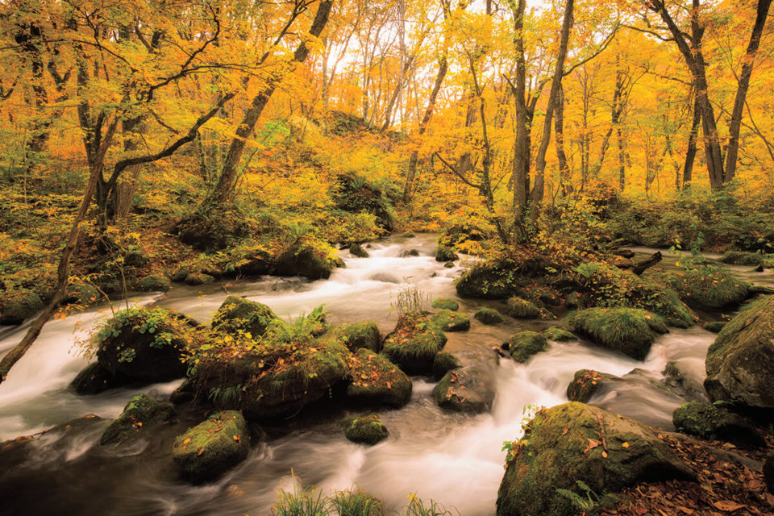
Ущелье Ойрасэ, лесная река в национальном парке у озера Товада, само по себе повод поехать на север Хонсю. Oirase Keiryu Hotel стоит прямо на её берегу, и почти всё здесь, от онсэна до ужина, устроено так, чтобы река не исчезала из виду.
Место
Отель на берегу Ойрасэ
Река Ойрасэ вытекает из озера Товада, и её верхние 14 километров называют ущельем Ойрасэ. Это особо охраняемая зона национального парка Товада-Хатимантай: буковый лес, мох и папоротники складываются здесь в почти нетронутый пейзаж, а в лесу живут самые разные птицы и звери. Oirase Keiryu Hotel из сети Hoshino Resorts стоит на берегу ущелья, на территории города Товада, и это единственный отель вдоль реки в пределах национального парка.
Девиз отеля: «медленная жизнь у горной реки». Осень здесь яркая: в конце октября ущелье почти целиком становится жёлтым, и эта листва держится до конца ноября. Зимой приходят снег и лёд, а весной и летом лес вокруг снова свежий и зелёный. Приезжать сюда можно в любой сезон, и каждый раз картина будет другой.
Искусство
Камины Таро Окамото
Сразу за спокойным роскошным лобби гостя встречает огромный камин «Миф леса». Его создал Таро Окамото (1911–1996), выдающийся японский художник XX века. На трубе камина рядом живут птицы, грибы и лесные духи.
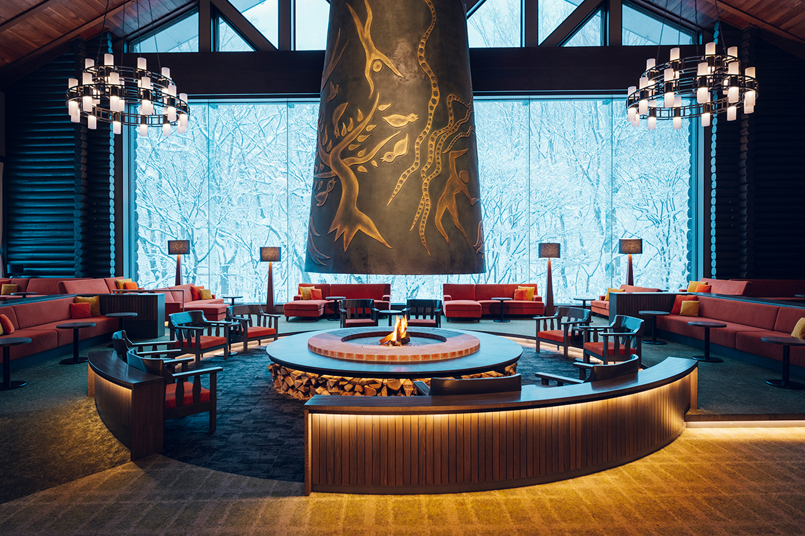
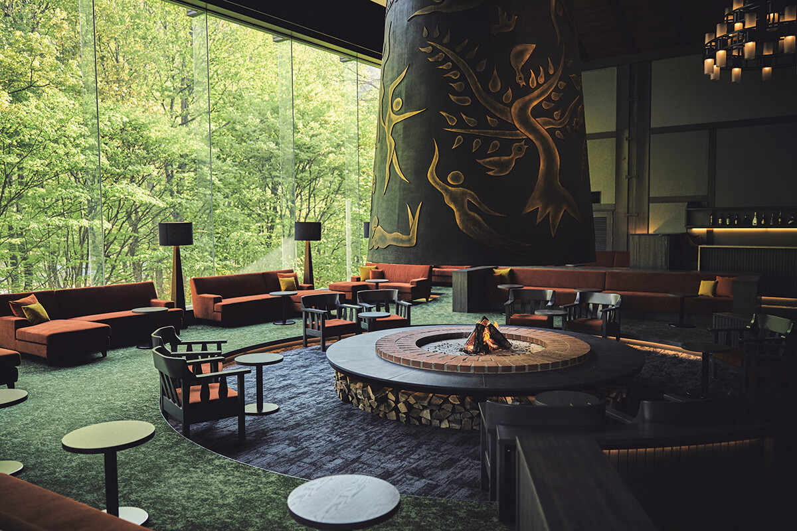
Кроме «Мифа леса», в отеле есть ещё две работы Окамото. По пути в западный корпус проходишь через общее пространство «Кэйрю-BASE». Здесь стоит «стена мха» шириной 8,5 метра, сделанная из настоящего мха, а рядом второй большой камин Окамото, «Бог реки», последняя работа художника.
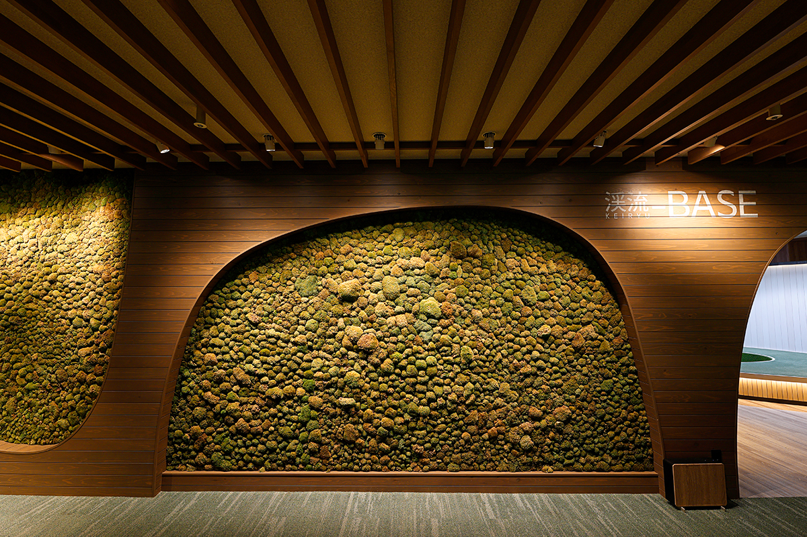
Работы Окамото производят сильное впечатление, но рядом с ними почему-то становится спокойно. Чем дольше на них смотришь, тем глубже уходят мысли. Похоже, дело в том, что весь отель пропитан бережным отношением к природе вокруг.
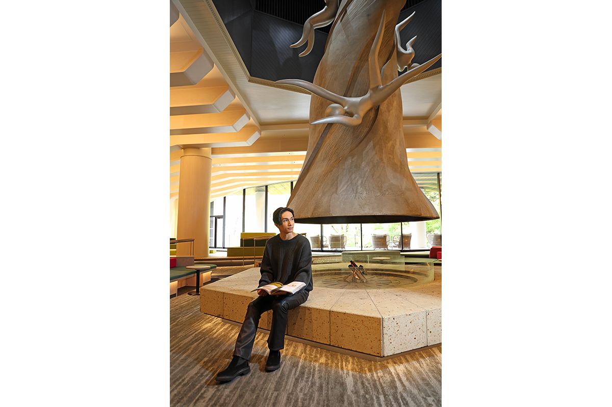
Номер
Люкс над рекой
Лучше всего «медленную жизнь» чувствуешь в «люксе у горной реки». Таких номеров всего два, площадь каждого 120 квадратных метров, вместить они могут до шести человек. Стену в интерьере отделали деревом магнолии кобуси, обеденный стол сделали из дзельквы и голубой смолы, так что он напоминает чистый горный поток, а над изголовьем кровати висит панно из настоящего мха.
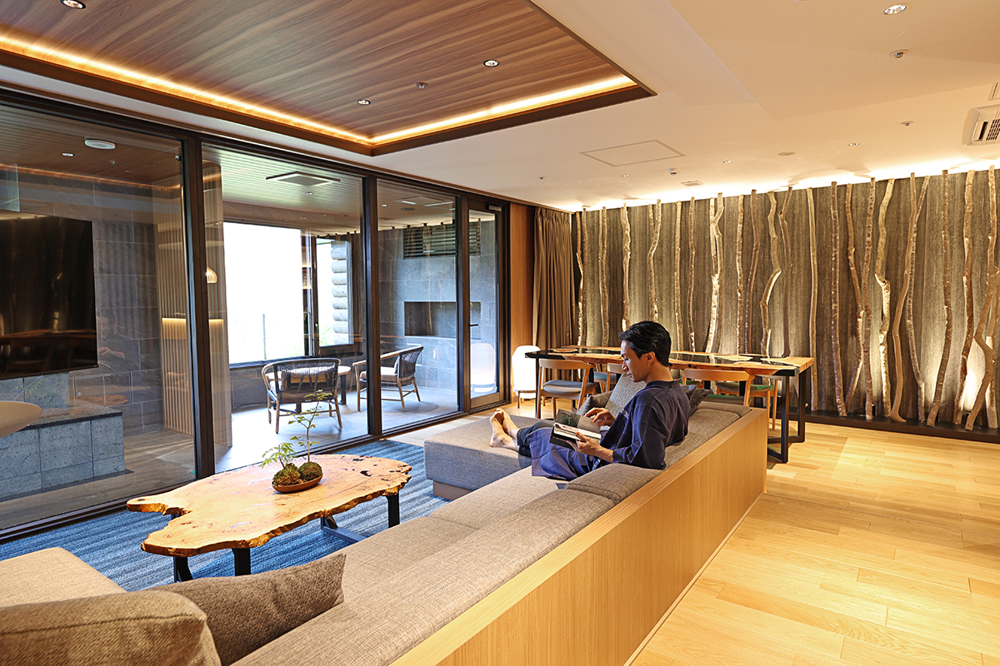
В номере есть собственная купель с водой онсэна, 1,8 метра в длину и метр в ширину, так что можно лечь, вытянувшись во весь рост. Прямо за окном течёт река, слышно птиц, ветер в кронах и шум воды. Купаться можно когда угодно и сколько угодно.
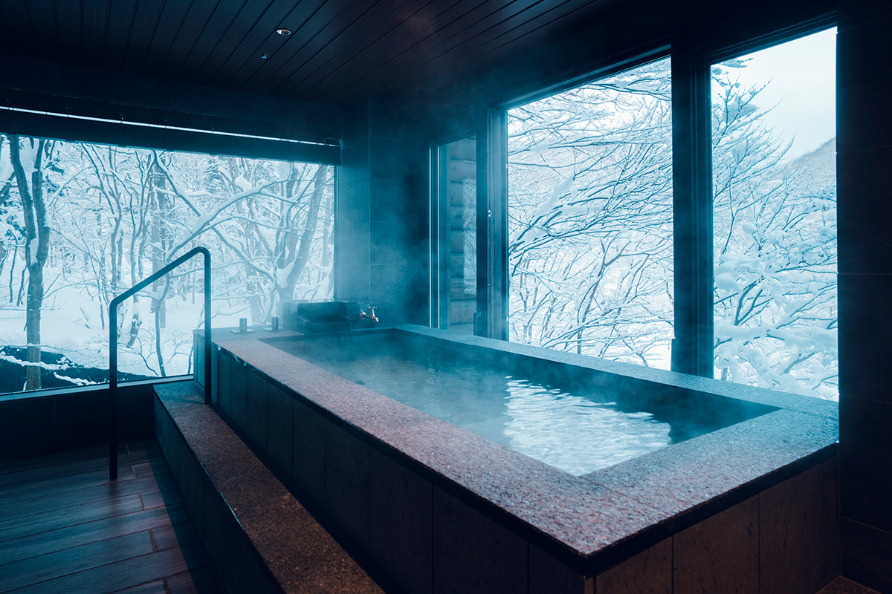
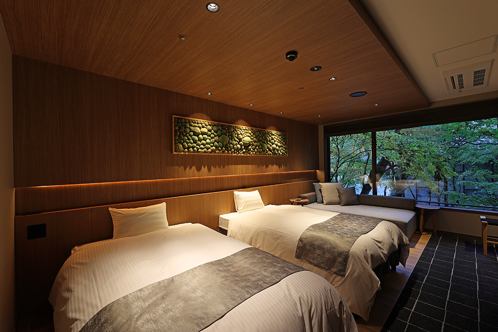
Номер устроен так, будто отдыхаешь посреди леса. Сюда хорошо приезжать, чтобы на несколько дней забыть о суете.
Онсэн
Открытая купальня и ледяные водопады
В «Кэйрю-BASE» есть библиотека, а после чтения можно спуститься в «открытую купальню у горной реки». Её вода как будто без границы переходит в лес и реку внизу, и купаешься словно в самом ущелье.
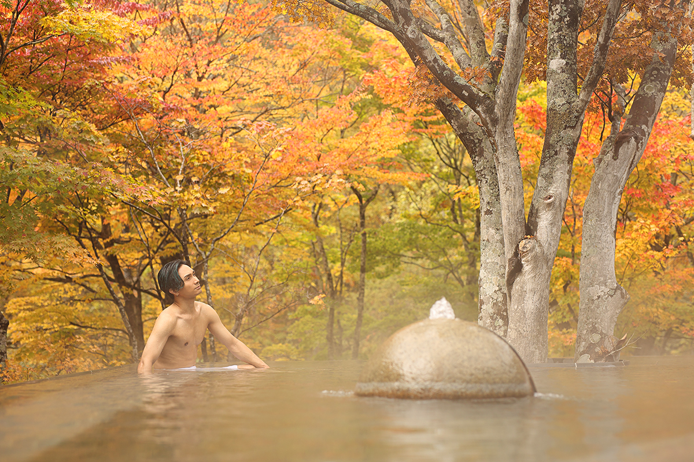
Осенью лес вокруг купальни окрашен во все оттенки жёлтого и красного. С середины декабря её окружает стена, которая воспроизводит «ледяные водопады». Зимой водопады на Ойрасэ замерзают, и это одна из примет здешнего сезона. В такой купальне, «онсэне ледяных водопадов», снег и лёд вокруг выглядят почти как иллюзия. Весной и летом купальня снова среди свежей зелени.
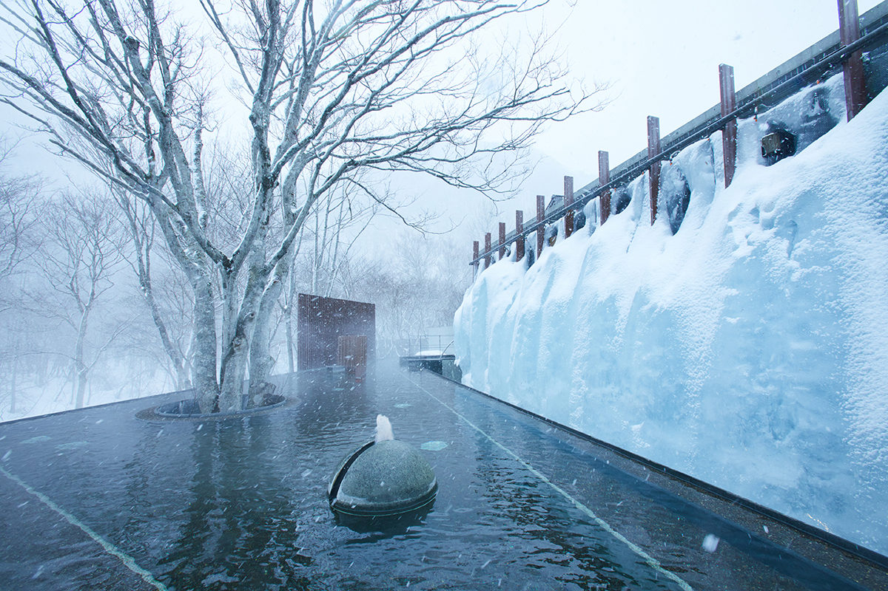
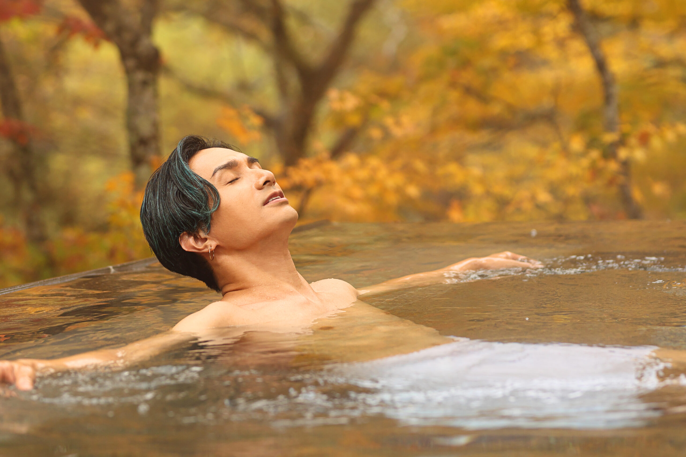
Зимой есть и «сауна у горной реки». В ней сидишь перед окном в заснеженный лес, охлаждаешься в купели среди природы и отдыхаешь на свежем воздухе, а к сауне подают французские закуски. В 2023 году сауна принимала одну компанию в день, до двух человек, за 55 000 иен.
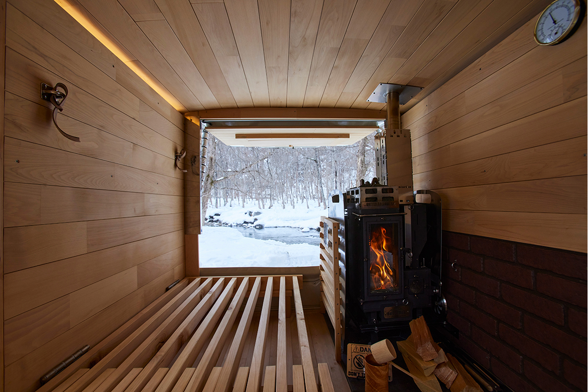
Ужин
Sonore: Аомори на французский лад
Французский ресторан Sonore открылся в отеле летом 2019 года как ресторан для взрослых: для семей в отеле есть шведский стол, а в Sonore ужинают неспешно, без детской суеты. Ресторанный обозреватель, побывавший здесь в 2019 году, написал, что такой ресторан сам может стать целью поездки.
Ужин начинается с аперитива на террасе. Она тянется вдоль реки метров на пятьдесят, на ней стоят столики и диваны, а в холодное время работают обогреватели. Сидишь на диване и слушаешь шум воды, насекомых и птиц.
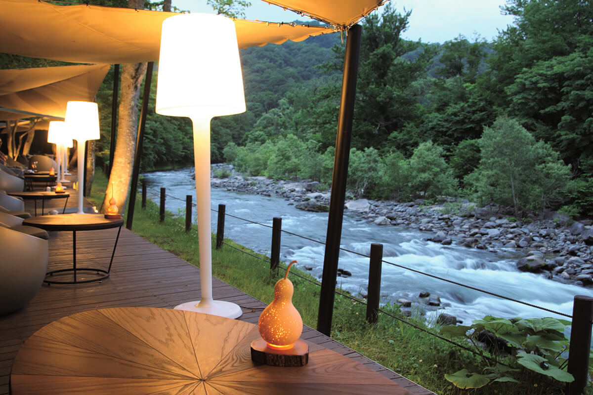
После бокала шампанского на террасу одна за другой несут закуски. В 2019 году это были финансье с хамоном и оливками, копчёный лосось с лимонным кремом на гречневом тесте, морской лещ, маринованный в пене из томатов и личи, жареная корюшка вакасаги, шу со свининой и флан с крабом. Через полчаса гостей приглашают в зал. Зимой терраса превращается в «камакуры», снежные домики.
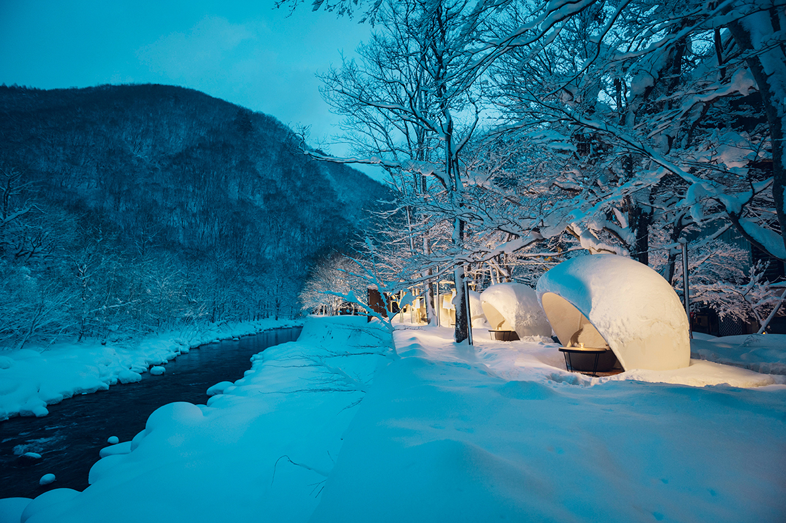
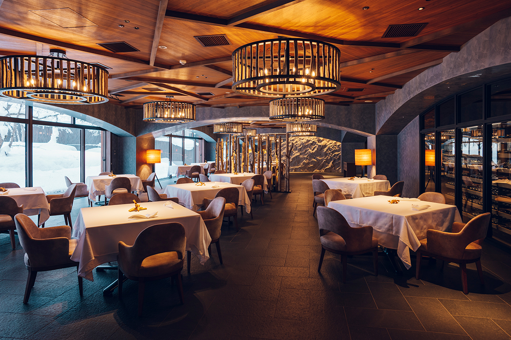
В зале между столами много места, а дерево, камень и вода в оформлении напоминают пейзаж ущелья. Кухня Sonore построена на сезонных продуктах местных производителей: это блюда Аомори, приготовленные по-французски, и к каждому подбирают вино.
Меню 2023 года
В 2023 году курс открывала зимняя тунцовая закуска. Жирного зимнего тунца нарезают и обжаривают на огне от рисовой соломы, а подают с пюре из горного ямса нагаимо, разведённым бульоном из сушёного тунца, и чипсами из того же ямса. Дымный аромат и лёгкий вкус хорошо ложатся на оранжевое вино из Эльзаса.
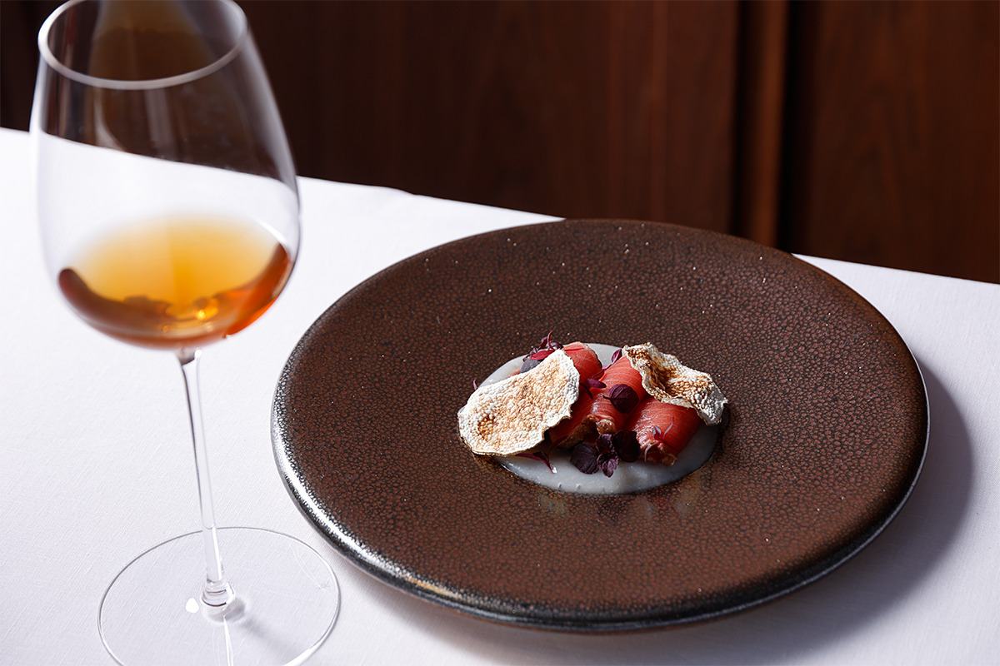
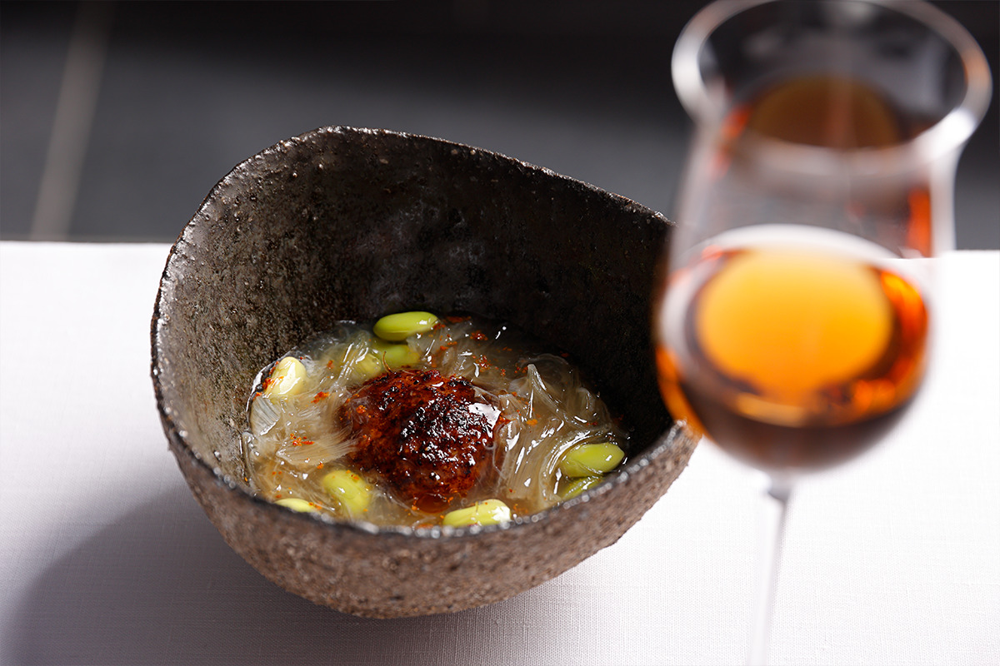
Блюдо с акулой придумано по мотивам местной кухни: в Аомори издавна готовят акулу. Пряность придаёт пюре в духе китайских ферментированных чёрных бобов, а выдержанный херес подчёркивает сладость и глубину вкуса.
Третья закуска это «дзяппа-дзиру», домашний суп полуострова Симокита, в версии Sonore. Филе трески выдерживают в хересе и рисовом солоде кодзи, чтобы оно стало мягким, и подают с тающими молоками и овощами в консоме из местной курицы «Аомори сяморокку». К супу наливают белое бургундское 2020 года с яркой минеральностью.
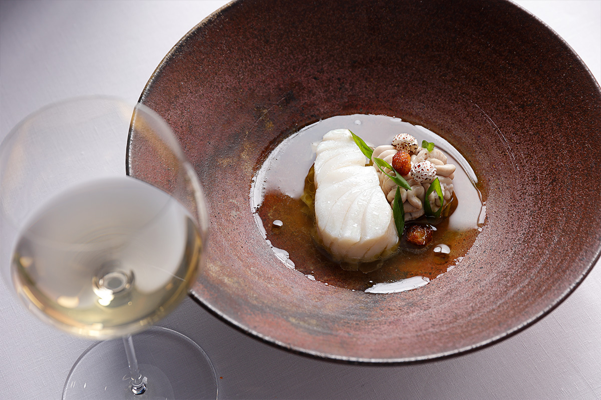
Меню 2019 года
Первое блюдо 2019 года было оформлено как пирожное «опера»: снизу мусс из гребешка и кальмара, затем желе из нори, тартар из тунца и лук-резанец, а сверху нагаимо с морским ежом и чёрной икрой. Тартар во французской кухне обычно делают из говядины, но главный продукт Аомори это тунец из Омы, и шеф-повар подал его с первой же тарелки.
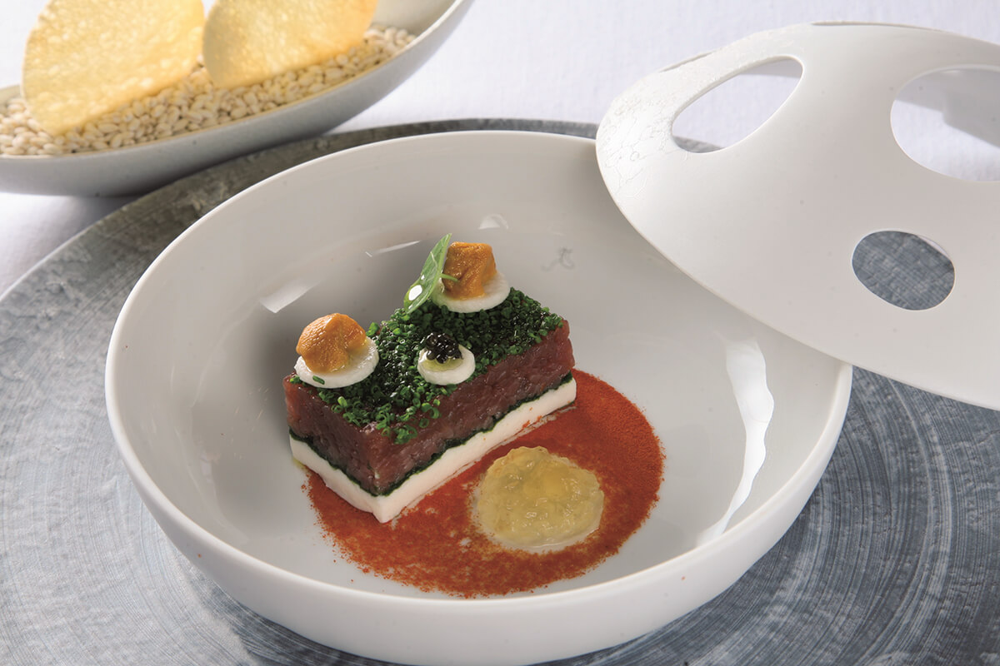
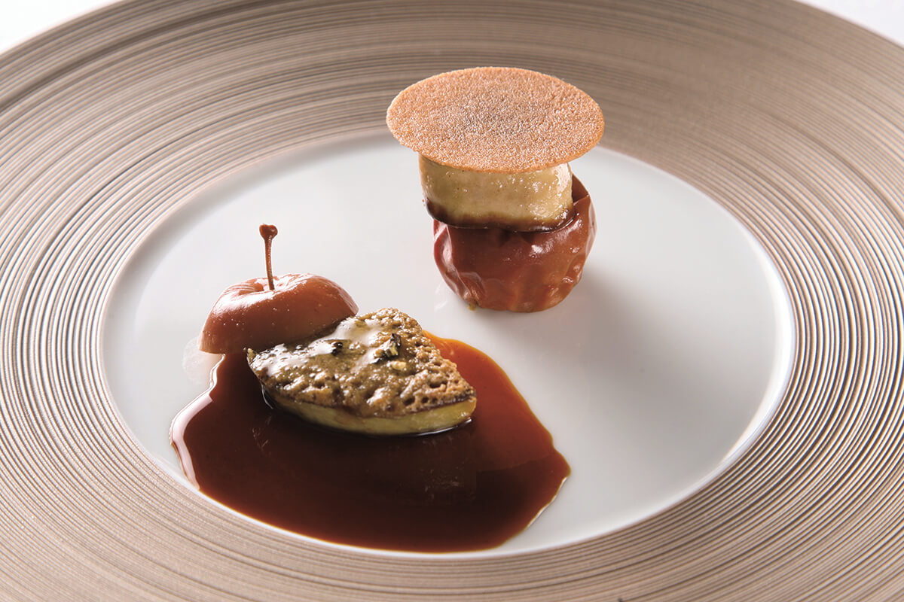
Во втором блюде фуа-гра встречается с главным фруктом Аомори, яблоком. Основой служит местный крекер намбу-сэмбэй: его делают из пшеничной муки, поэтому он хорошо уживается с французской кухней. Дальше шли озёрный лосось химэмасу с горными травами по-провансальски и пирог «турт» с голубем и морским ушком.
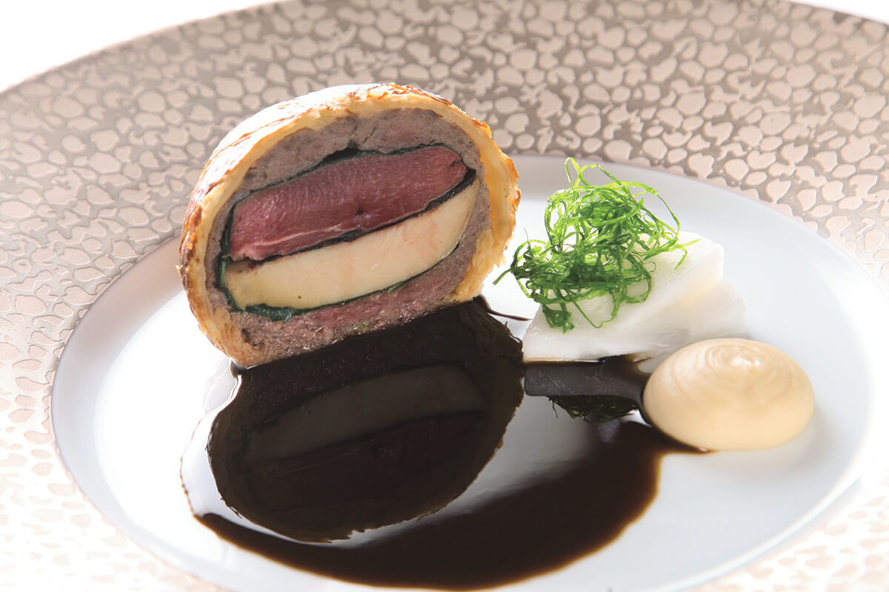
Шеф-повар учился у отмеченного звёздами мастера блюд из дичи, и соусы у него безупречны. Десерты тоже построены на неожиданных сочетаниях: шоколад с чёрным чесноком, французский тост с яблоком.
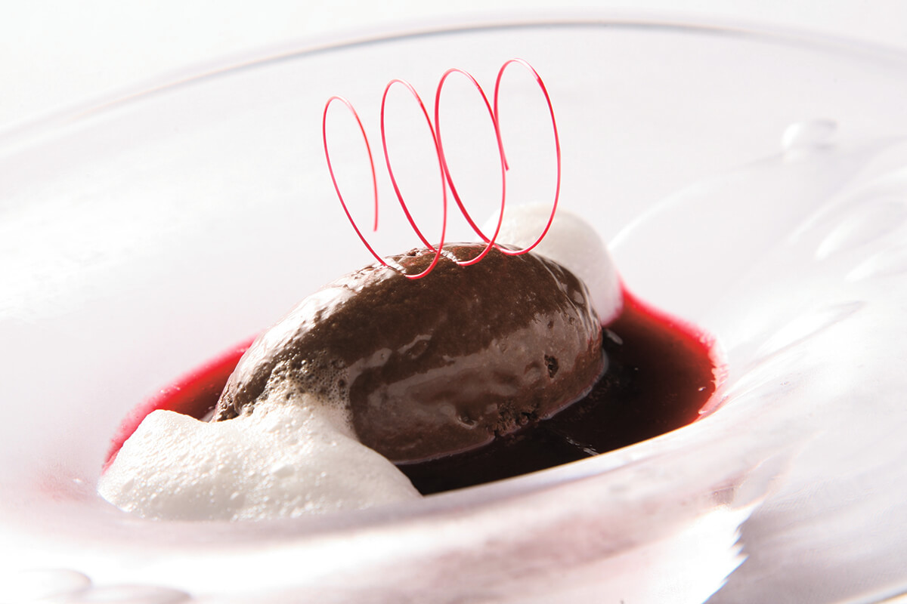
Кухня отелей Hoshino Resorts везде своя, но каждый раз строится на местных продуктах. Руководитель ресторанной службы сети объяснил это так:
«При наборе поваров мы не смотрим на опыт. Важно, чтобы блюдо, каким бы ни был итоговый вид, выросло из классики»
руководитель ресторанной службы Hoshino Resorts
В 2019 году Sonore делал ставку на классическую по корням современную французскую кухню и на хорошие вина: в карте были и знаменитые бутылки, и удачные находки по смелым ценам.
Ресторан Sonore
- Адрес
- префектура Аомори, Товада, Окусэ, Тотикубо, 231, Oirase Keiryu Hotel, западный корпус, 1-й этаж
- Телефон
- +81 570-073-022 (центр бронирования Hoshino Resorts)
- Часы работы
- 17:30–21:00
- Цены / Вход
- проживание с ужином в Sonore и завтраком от 32 500 иен (2020)
Завтрак
Буйабес у реки
Завтракать здесь тоже интересно, и ради разных завтраков стоит остаться на несколько ночей. Зимой 2024 года, с 7 января по 24 марта, с 8:30 до 9:30 подавали «буйабес у горной реки» за 4050 иен: в котелке краб, креветки, гребешки и молоки, а к нему белое вино.
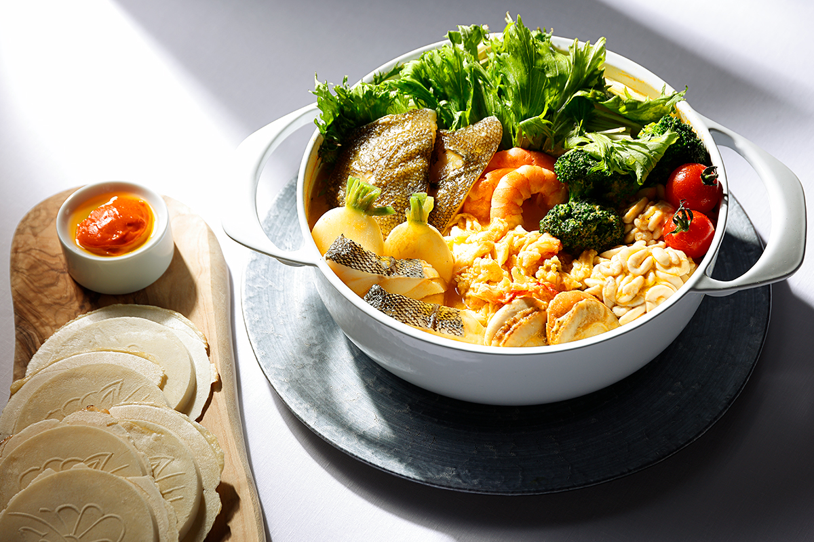
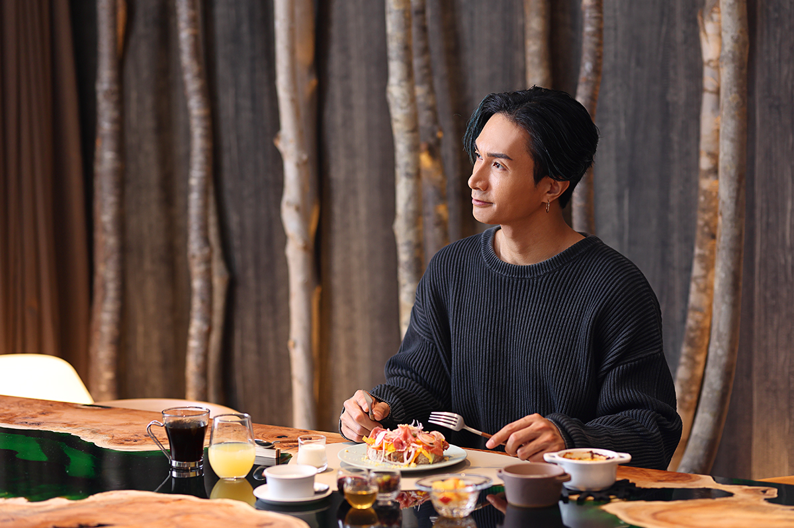
Тишина у горной реки, онсэн, французская кухня из продуктов Аомори: сюда едут не за развлечениями, а за спокойствием.
Oirase Keiryu Hotel
- Адрес
- префектура Аомори, Товада, Окусэ, Тотикубо, 231
- Телефон
- +81 50-3134-8094 (центр бронирования Hoshino Resorts)
- Номера
- 187
- Заезд / выезд
- 15:00 / 12:00
- Цены / Вход
- от 24 000 иен с ужином и завтраком, с налогом и сервисным сбором (2023)
- Как добраться
- из аэропорта Аомори около 1 часа 20 минут на машине; от станций JR Хатинохэ и Аомори около 1 часа 30 минут на машине, есть бесплатный автобус отеля по предварительной записи
Фото: Норихито Судзуки, Мунэаки Маэда.